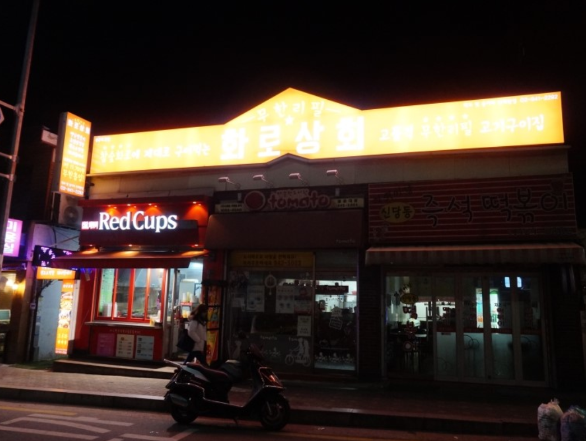
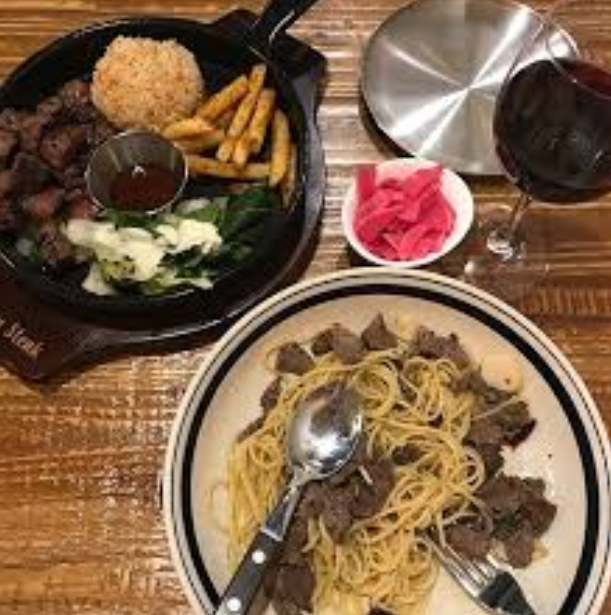
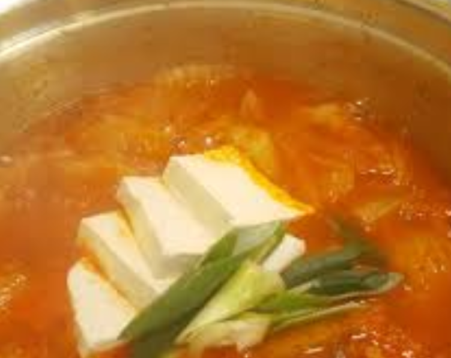
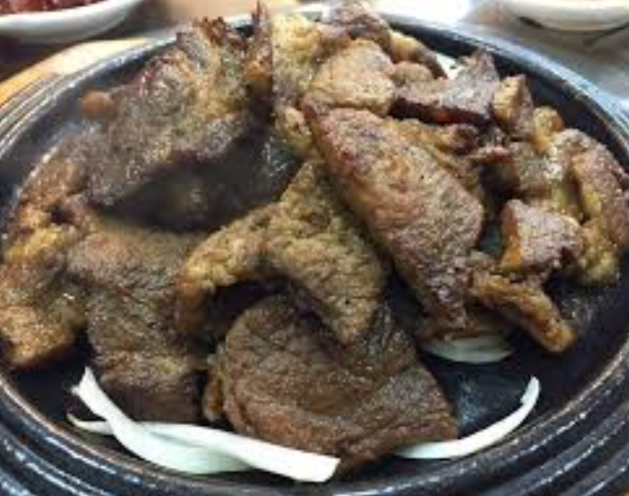
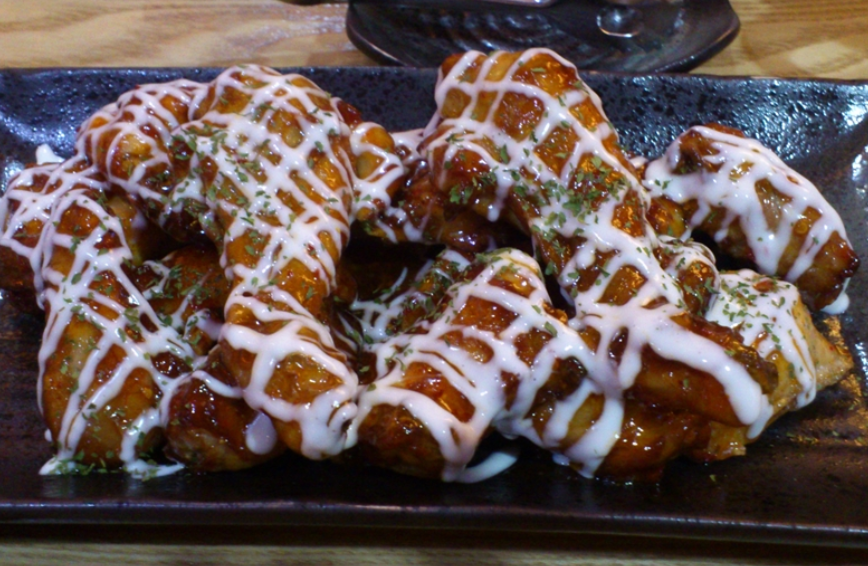
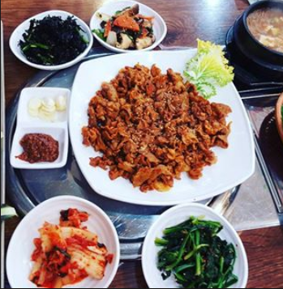
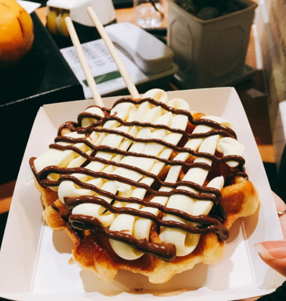
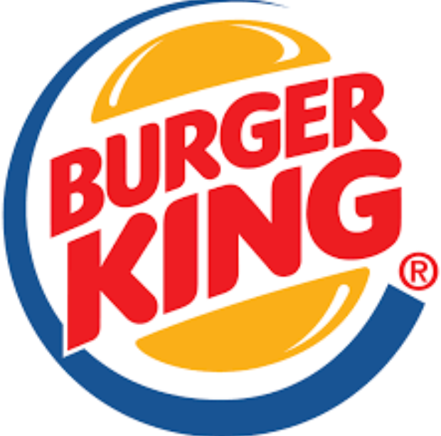

화로상회

내가 생각하는 광운대 최고의 맛집으로 숯불 고기 무한 리필집이다. 보통 무한리필 집은 고기가 않좋거나 또는 숯이 질이 안좋은 반면 여기는 숯도 참숯이고 고기도 퀄리티가 매우매우 뛰어난 최고의 맛집이다. 좋은일이 생기거나 나쁜일이생기거나 아무때나 가도 좋은 밥집이다.
퀸즈스테이크

스테이크는 언제나 먹어도 매우 옳다. 그러나 학교 근처에는 가성비 좋은 스테이크 집을 찾기가 힘들지만 좀 시간을 들여서 석계역 근처로 가게되면 퀸즈스테이크라는 가성비 좋은 스테이크집이 있다. 맛도 가격에 비해 괜찮고 양도 나쁘지 않아서 괜찮은 맛집으로 생각된다. SNS로 이벤트까지하면 음료수도 준다.
백채김치찌개

석계역 가는길에 있는 김치찌개로서 원래 광운대에 김치만이라는 비슷한 김치찌개 집이 있었는데 이건 안타깝게도 먼저 죽고 이제 백채 김치찌개만 남았다. 솔직히 말하면 화로상회 급은 아니지만 내가 좋아해서 5성로 올렸다. 김치찌개에 넣어주는 고기가 매우 맛있어서 추천
월계숯불갈비

항상 숯불갈비백반만 먹어봤지만 반찬도 매우 훌륭하고 고기도 매우 맛있는 밥집이다. 다른 음식이 되게 많기는 한데 단 한번도 먹어본적이 없어서 무슨맛인지는 잘 모르겠다. 반찬으로는 양념게장이 나오는데 개인적으로 양념게장을 매우 좋아하기에 내 주관에 매우 큰 +점수가 된다. 게다가 무한리필도 되니 갈비도 먹고 게장도 먹고 맛있게 먹을수 있다. 광운대 학생은 할인해주니 졸업하기전에 열심히 먹자.
맛닭꼬

학교근처에는 매우 많은 치킨집이 있다. 하지만 나에게 가장 맛있었던 치킨은 맛닭꼬다. 물론 가성비는 매우 떨어지지만 치킨 자체는 매우 맛있어서 배를 채우기 보다는 치킨이 먹고 싶을때 가는 치킨집이다. 학기초가 되면 많은 치킨집이 댓거리나 개강총회 장소가 되는데 여기를 그런 장소로 잡으면 돈이 와장창 깨지니 참고할것
연탄불고기

연탄불고기는 사람들이 잘 모르는 맛집중에 하나이다. 광운대역에서 나오는 골목사이 어딘가에 위치해있는데 여기는 쌈을 싸먹는 집이라고 생각하면 된다. 주문을 하면 쌈채소와 같이 연탄불고기가 나오는데 매우매우 맛있다. 그래서 그런지 여기서 밥먹다보면 교수님들을 많이 만날수 있다. 저녁에 시간이 남고 뭔가 맛있는것을 먹고 싶은 때 한번 검색해서 찾아가보자.
배러 댄 와플

학교에 저번에 생긴 와플집이다. 원래는 와플대학이라고 와플에 아이스크림 넣어서 주는 와플집이 있었는데 귀신가 같이 사라지고 다른곳에 생긴 와플집이다. 여기는 밥먹고나서 허전할때 하나씩 먹기 좋으며 사실 플레인 와플이 가성비가 제일 좋아서 많이 사먹었다. 아 집가면서 와플사먹어야지
버거킹

말이 필요한가. 버거킹이다. 사실 학교 근처에는 버거킹이 없는데 공릉쪽에 하나 있어서 배달이 된다. 배달이 되기 때문에 5성를 할 가치가 충분하다고 생각한다. 버거는 버거킹
오늘의 밥집